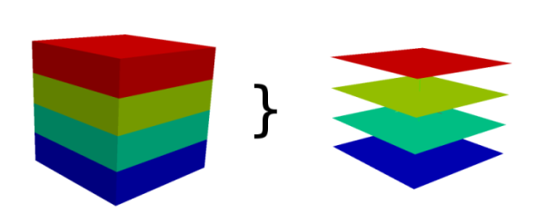

DESCRIPTION
Converts one 3D raster map into several 2D raster maps (depends on depths).
If the 2D and 3D region settings are different, the 3D resolution will be
adjusted to the 2D resolution (the depths are not touched).
The user can force r3.to.rast to use the 2D resolution of the input
3D raster map for the output maps, independently from the current region settings.

NOTES
Every slice of the 3D raster map is copied to one 2D raster map. The maps
are named like output_slicenumber. Slices are counted from bottom
to the top, so the bottom slice has number 1.
The number of slices is equal to the number of depths.
SEE ALSO
r3.cross.rast,
r3.out.vtk,
r3.out.ascii,
g.region
AUTHOR
Sören Gebbert
Last changed: $Date$